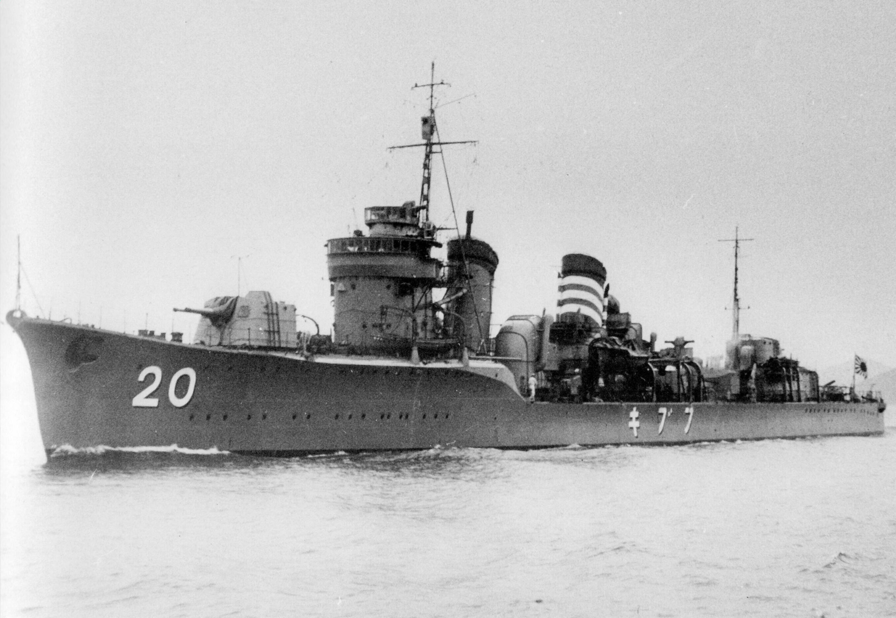

Displacement 1,750 long tons (1,780 t) standard 2,050 long tons (2,080 t) re-built Length 111.96 m (367.3 ft) pp 115.3 m (378 ft) waterline 118.41 m (388.5 ft) overall Beam 10.4 m (34 ft 1 in) Draft 3.2 m (10 ft 6 in) Propulsion Kampon type boilers 2Kampon Type Ro geared turbines shafts at 50,000 ihp (37,000 kW) Speed 38 knots (44 mph; 70 km/h) Range 5,000 nmi (9,300 km) at 14 knots (26 km/h) Complement 219 Armament 6 × Type 3 127 mm 50 caliber naval guns (3×2) up to 22 × Type 96 25 mm AT/AA Guns up to 10 × 13 mm AA guns 9 × 610 mm (24 in) torpedo tubes 36 × depth charges
